Vue d'ensemble
Cette première section donne les indicateurs clés du backtest et permet de juger immédiatement la qualité globale de la stratégie.
Résumé du portefeuille
Valeurs finales, poids de fin de période, cash et structure globale du portefeuille.
| element | valeur |
|---|---|
| Date de début | 2018-12-31 |
| Date de fin | 2026-03-09 |
| Valeur finale portefeuille | 79 278,23 |
| Valeur finale benchmark | 97 600,80 |
| Valeur finale poche core | 45 878,03 |
| Valeur finale poche monétaire | 25 217,20 |
| Valeur finale poche opportuniste | 8 124,93 |
| Cash final core | 0,00 |
| Cash final monétaire | 0,00 |
| Cash final opportuniste | 0,00 |
| Nombre final positions core | 11,00 |
| Nombre final positions monétaires | 3,00 |
| Nombre final positions opportunistes | 2,00 |
| Coûts cumulés payés | 5 760,61 |
| Poids final core | 0,58 |
| Poids final monétaire | 0,32 |
| Poids final opportuniste | 0,10 |
Résumé des performances
Tableau synthétique des indicateurs de performance et de risque du backtest complet.
| categorie | indicateur | valeur |
|---|---|---|
| Metrics globales | Performance totale | 58.56% |
| Metrics globales | CAGR | 6.51% |
| Metrics globales | Volatilité annualisée | 17.85% |
| Metrics globales | Sharpe | 44.36% |
| Metrics globales | Max drawdown | -39.68% |
| Metrics globales | Performance benchmark | 95.20% |
| Metrics globales | CAGR benchmark | 9.58% |
| Metrics globales | Performance active | -36.65% |
| Metrics globales | Tracking error | 11.77% |
| Metrics globales | Information ratio | -27.84% |
| Metrics globales | Turnover moyen de rebalance | 37.43% |
| Metrics globales | Turnover total | 3256.61% |
| Metrics globales | Coûts totaux payés | 576061.46% |
| Metrics globales | Coûts / capital initial | 11.52% |
| Metrics globales | Nombre d'ordres | 168200.00% |
| Metrics globales | Nombre d'ordres exécutés | 80000.00% |
Performance par poche
Contribution relative des différentes sleeves en performance, risque et poids final.
| poche | valeur_initiale | valeur_finale | performance_totale | cagr | volatilite_annualisee | max_drawdown | poids_final_dans_portefeuille |
|---|---|---|---|---|---|---|---|
| Portefeuille | 50 000,00 | 79 278,23 | 58.56% | 6.51% | 17.85% | -39.68% | 100.00% |
| Core | 24 997,87 | 45 878,03 | 83.53% | 8.66% | 40.86% | -42.78% | 57.87% |
| Monétaire | 14 994,15 | 25 217,20 | 68.18% | 7.37% | 32.51% | -38.08% | 31.81% |
| Opportuniste | 9 987,15 | 8 124,93 | -18.65% | -2.78% | 8233.02% | -100.00% | 10.25% |
Diagnostics rendement / risque
Régularité de la stratégie à travers les mois, années, journées et performance active.
| indicateur | valeur |
|---|---|
| Nombre de mois | 8700.00% |
| Proportion de mois positifs | 62.07% |
| Meilleur mois | 14.50% |
| Pire mois | -20.82% |
| Nombre d'années | 800.00% |
| Proportion d'années positives | 75.00% |
| Meilleure année | 22.50% |
| Pire année | -18.36% |
| Meilleur jour | 8.86% |
| Pire jour | -12.85% |
| Proportion de jours à alpha positif | 50.62% |
| Meilleur jour actif | 3.00% |
| Pire jour actif | -4.42% |
Diagnostics de positions
Analyse de la concentration et du niveau moyen d’investissement par poche.
| indicateur | valeur |
|---|---|
| Positions finales core | 11,00 |
| Positions finales monétaires | 3,00 |
| Positions finales opportunistes | 2,00 |
| Moyenne positions core | 11,21 |
| Moyenne positions monétaires | 2,95 |
| Moyenne positions opportunistes | 1,88 |
Turnover et coûts
Mesure de l’intensité de rotation de la stratégie et de l’impact des coûts de transaction.
| indicateur | valeur |
|---|---|
| Turnover total | 32,57 |
| Turnover moyen quotidien | 0,02 |
| Turnover moyen sur jours de rebalance | 0,37 |
| Turnover journalier maximum | 0,94 |
| Coûts totaux payés | 5 760,61 |
| Coût moyen par jour | 3,13 |
| Coût journalier maximum | 178,81 |
Résumé des décisions d’ordres
Vue consolidée des raisons d’exécution ou de rejet des ordres proposés par le moteur.
| execute | raison_decision | nombre | volume_total | volume_moyen |
|---|---|---|---|---|
| 1,00 | NEW_ENTRY | 312 | 898 759,82 | 2 880,64 |
| 1,00 | EXIT_NON_TARGET | 228 | 853 573,61 | 3 743,74 |
| 1,00 | NEW_OPP_ENTRY | 87 | 381 577,47 | 4 385,95 |
| 1,00 | KEEP_TOP_RANK | 67 | 152 295,44 | 2 273,07 |
| 1,00 | KEEP_OPP | 51 | 189 597,80 | 3 717,60 |
| 1,00 | KEEP_BUFFER_ZONE | 33 | 77 785,57 | 2 357,14 |
| 1,00 | PERMANENT_ETF | 21 | 48 549,72 | 2 311,89 |
| 1,00 | INIT_PERMANENT_ETF | 1 | 3 189,60 | 3 189,60 |
| 0,00 | REJECT_SMALL_ORDER | 333 | 41 386,50 | 124,28 |
| 0,00 | REJECT_DEADBAND | 284 | 242 206,68 | 852,84 |
| 0,00 | ML_REJECT_REBALANCE | 225 | 611 490,50 | 2 717,74 |
| 0,00 | REJECT_ZERO_SHARES | 40 | 0,00 | 0,00 |
Comparatif ML vs non-ML
Cette section permet de vérifier si la couche ML modifie réellement la stratégie en performance, en risque et en exécution.
| total_return | cagr | annualized_volatility | sharpe | max_drawdown | benchmark_total_return | benchmark_cagr | active_return | tracking_error | information_ratio | average_rebalance_turnover | total_turnover | total_costs_paid | total_costs_as_pct_initial | num_orders | num_executed_orders | official_start_date | official_end_date | warmup_start_date | eligible_start_date | target_backtest_years | label | num_orders_history_rows | num_target_history_rows | executed_orders_delta_vs_without_ml |
|---|---|---|---|---|---|---|---|---|---|---|---|---|---|---|---|---|---|---|---|---|---|---|---|---|
| 59.87% | 6.63% | 17.07% | 0,46 | -38.23% | 95.20% | 9.58% | -35.33% | 12.07% | -0,27 | 0,42 | 36,70 | 6 457,79 | 0,13 | 1 398 | 821 | 2018-12-31 | 2026-03-09 | 2018-01-02 | 2018-12-31 | 10,00 | without_ml | 1 398,00 | 1 143,00 | 0 |
| 58.56% | 6.51% | 17.85% | 0,44 | -39.68% | 95.20% | 9.58% | -36.65% | 11.77% | -0,28 | 0,37 | 32,57 | 5 760,61 | 0,12 | 1 682 | 800 | 2018-12-31 | 2026-03-09 | 2018-01-02 | 2018-12-31 | 10,00 | with_ml | 1 682,00 | 1 118,00 | -21 |
Performances annuelles
Vue annuelle du portefeuille, du benchmark et des poches pour identifier les régimes les plus favorables.
| annee | performance_portefeuille | performance_benchmark | performance_active | performance_core | performance_monetaire | performance_opportuniste |
|---|---|---|---|---|---|---|
| 2 018,00 | ||||||
| 2 019,00 | 20.58% | 34.15% | -13.57% | 55.08% | 39.30% | -93.17% |
| 2 020,00 | -3.07% | 5.16% | -8.23% | -18.41% | -15.03% | 1230.40% |
| 2 021,00 | 22.50% | 37.75% | -15.26% | 11.06% | 13.18% | 59.47% |
| 2 022,00 | -18.36% | -13.05% | -5.31% | -2.86% | -6.87% | -61.21% |
| 2 023,00 | 1.88% | 14.89% | -13.01% | 2.71% | 3.79% | -10.18% |
| 2 024,00 | 9.01% | 2.95% | 6.06% | -4.51% | 10.72% | 99.04% |
| 2 025,00 | 13.73% | 3.97% | 9.76% | 33.41% | 1.26% | -26.27% |
| 2 026,00 | 0.90% | -7.31% | 8.21% | -4.29% | 10.12% | 5.12% |
Pires drawdowns
Les épisodes de baisse les plus marqués du portefeuille, classés du plus sévère au moins sévère.
| date | valeur_portefeuille | plus_haut_historique | drawdown |
|---|---|---|---|
| 2020-03-18 00:00:00 | 38 483,48 | 63 795,72 | -39.68% |
| 2020-03-23 00:00:00 | 38 941,25 | 63 795,72 | -38.96% |
| 2020-03-16 00:00:00 | 39 231,04 | 63 795,72 | -38.51% |
| 2020-03-19 00:00:00 | 39 820,36 | 63 795,72 | -37.58% |
| 2020-03-17 00:00:00 | 40 410,25 | 63 795,72 | -36.66% |
| 2020-03-20 00:00:00 | 41 062,44 | 63 795,72 | -35.63% |
| 2020-04-03 00:00:00 | 41 233,02 | 63 795,72 | -35.37% |
| 2020-03-12 00:00:00 | 41 553,46 | 63 795,72 | -34.86% |
| 2020-04-02 00:00:00 | 41 838,26 | 63 795,72 | -34.42% |
| 2020-04-01 00:00:00 | 41 950,50 | 63 795,72 | -34.24% |
| 2020-03-13 00:00:00 | 42 298,41 | 63 795,72 | -33.70% |
| 2020-03-24 00:00:00 | 42 392,05 | 63 795,72 | -33.55% |
| 2020-03-27 00:00:00 | 42 540,01 | 63 795,72 | -33.32% |
| 2020-03-30 00:00:00 | 42 985,33 | 63 795,72 | -32.62% |
| 2020-03-25 00:00:00 | 43 359,27 | 63 795,72 | -32.03% |
Performances mensuelles
Tableau détaillé des performances mensuelles du portefeuille, du benchmark et de chaque poche.
| mois | performance_portefeuille | performance_benchmark | performance_active | performance_core | performance_monetaire | performance_opportuniste |
|---|---|---|---|---|---|---|
| 2018-12 | ||||||
| 2019-01 | 3.71% | 7.15% | -3.44% | 8.78% | -31.36% | 3.19% |
| 2019-02 | 2.32% | 5.52% | -3.19% | 21.37% | 4.05% | -49.93% |
| 2019-03 | 0.63% | 1.75% | -1.13% | -7.74% | 2.10% | 108.74% |
| 2019-04 | 2.83% | 3.56% | -0.73% | -3.45% | 55.48% | -42.74% |
| 2019-05 | -2.38% | -4.90% | 2.52% | 27.02% | -5.04% | -99.19% |
| 2019-06 | 6.51% | 6.98% | -0.48% | -25.71% | 4.78% | 23260.04% |
| 2019-07 | -0.24% | -1.17% | 0.92% | 12.47% | 1.19% | -24.24% |
| 2019-08 | -2.69% | -1.88% | -0.81% | -7.23% | -2.36% | -3.68% |
| 2019-09 | 1.65% | 1.43% | 0.22% | 15.17% | 14.62% | -52.96% |
| 2019-10 | 0.48% | 3.99% | -3.51% | -6.93% | 1.53% | 56.88% |
| 2019-11 | 1.60% | 3.39% | -1.78% | 0.21% | 2.80% | 4.88% |
| 2019-12 | 3.95% | 2.66% | 1.30% | 24.29% | 3.28% | -89.68% |
| 2020-01 | -2.83% | -2.80% | -0.04% | 1.26% | -10.58% | 3.83% |
| 2020-02 | -8.36% | -8.39% | 0.03% | -8.18% | -8.82% | -5.21% |
| 2020-03 | -20.82% | -13.24% | -7.58% | -24.19% | -13.78% | -19.71% |
| 2020-04 | 14.50% | 10.24% | 4.26% | 1.84% | 12.79% | 747.22% |
| 2020-05 | 7.06% | 9.06% | -1.99% | 7.76% | 6.30% | 5.75% |
| 2020-06 | 3.08% | 2.82% | 0.26% | -7.73% | -8.11% | 115.85% |
| 2020-07 | 0.08% | -2.00% | 2.07% | -0.30% | -0.17% | 1.61% |
| 2020-08 | 3.86% | 3.24% | 0.61% | 15.87% | 14.20% | -51.82% |
| 2020-09 | 1.05% | 0.24% | 0.80% | 19.47% | -1.87% | -90.93% |
| 2020-10 | -6.16% | -3.38% | -2.79% | -7.32% | -3.72% | -3.25% |
| 2020-11 | 7.72% | 12.57% | -4.85% | -22.30% | -1.08% | 2556.12% |
| 2020-12 | 0.98% | 0.97% | 0.00% | 14.97% | 1.01% | -22.13% |
| 2021-01 | 1.60% | -3.85% | 5.45% | -6.64% | 0.91% | 32.19% |
| 2021-02 | 0.89% | 3.51% | -2.62% | 5.21% | 1.79% | -11.14% |
| 2021-03 | 4.27% | 3.94% | 0.34% | 18.17% | 3.98% | -35.91% |
| 2021-04 | 0.26% | 5.65% | -5.39% | 5.02% | -9.80% | 2.28% |
| 2021-05 | 1.69% | 4.79% | -3.09% | 12.73% | 0.37% | -57.29% |
| 2021-06 | 1.19% | 2.68% | -1.49% | -2.96% | 2.66% | 55.85% |
| 2021-07 | -0.86% | 2.64% | -3.49% | -3.67% | -0.11% | 23.17% |
| 2021-08 | 1.32% | -2.72% | 4.04% | 0.76% | 2.37% | 2.00% |
| 2021-09 | -4.05% | -5.36% | 1.31% | -4.38% | -2.78% | -5.26% |
| 2021-10 | 5.23% | 6.52% | -1.29% | -2.35% | 5.31% | 62.08% |
| 2021-11 | -3.48% | 3.64% | -7.11% | -5.76% | -1.39% | 2.74% |
Figures et commentaires
Chaque figure ci-dessous est accompagnée d’un commentaire d’interprétation pour rendre le rapport directement exploitable.
Valeur du portefeuille vs benchmark
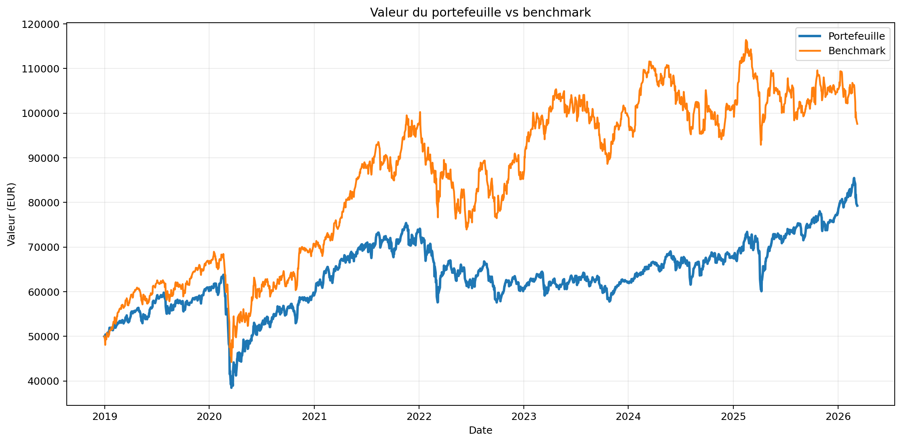
Ce graphique montre la trajectoire de la valeur absolue du portefeuille par rapport au benchmark entre 2018-12-31 et 2026-03-09. Le portefeuille termine sur une performance totale de 58.56% contre 95.20% pour le benchmark, soit une performance active finale de -36.65%.
Performance cumulée rebasée
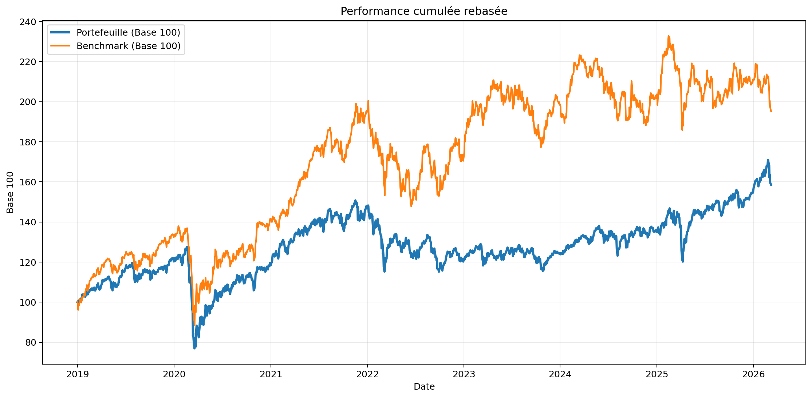
La vue rebasée en base 100 permet de comparer la dynamique de performance indépendamment du capital de départ. C’est la meilleure lecture pour voir si la surperformance est régulière ou concentrée sur quelques périodes.
Performance active cumulée
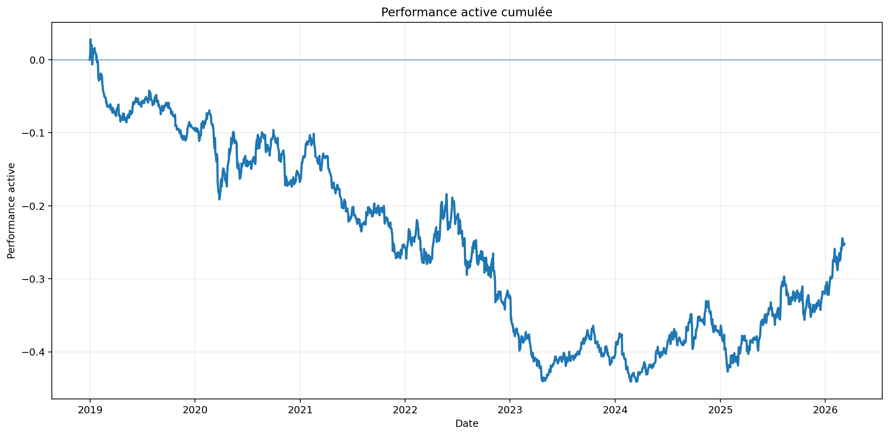
La performance active cumulée se termine à -25.21%. Cette figure permet de juger si l’alpha est structurel ou simplement ponctuel.
Drawdown
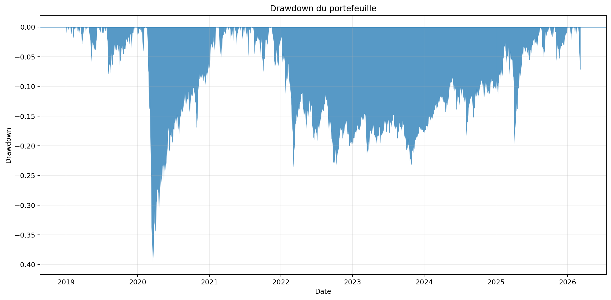
Le drawdown maximum atteint -39.68%. Cette figure est essentielle pour mesurer le coût psychologique et financier de la stratégie en phase défavorable.
Performance glissante 252 jours
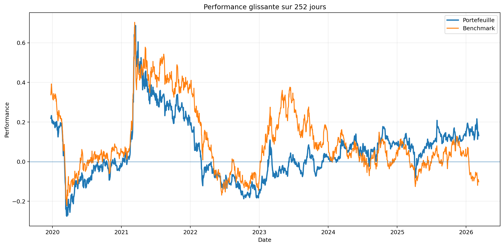
Les performances glissantes sur un an permettent de repérer les périodes de forte création de valeur et celles où la stratégie perd temporairement son avantage.
Volatilité glissante 252 jours
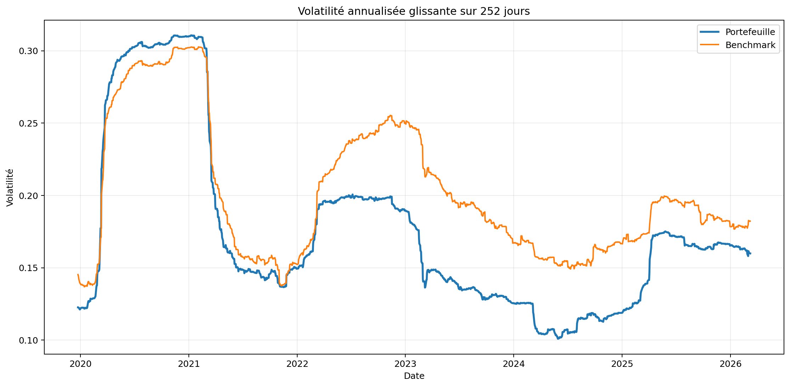
La volatilité glissante annualisée montre si le profil de risque est stable ou s’il varie fortement selon les régimes de marché.
Sharpe glissant 252 jours
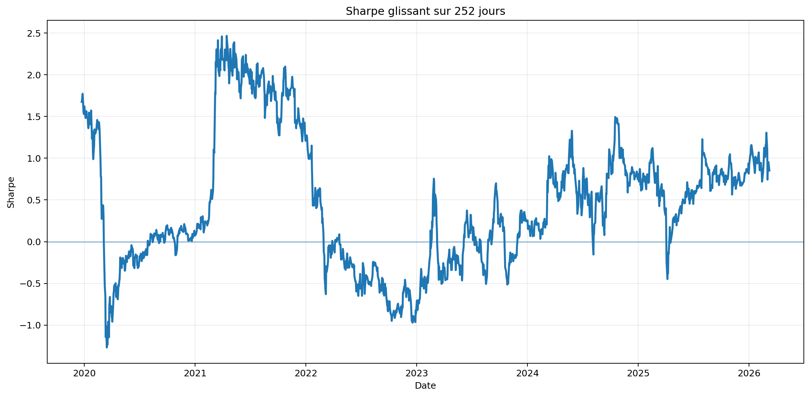
Le Sharpe glissant permet de savoir si la performance a été obtenue efficacement par unité de risque prise.
Performance active mensuelle
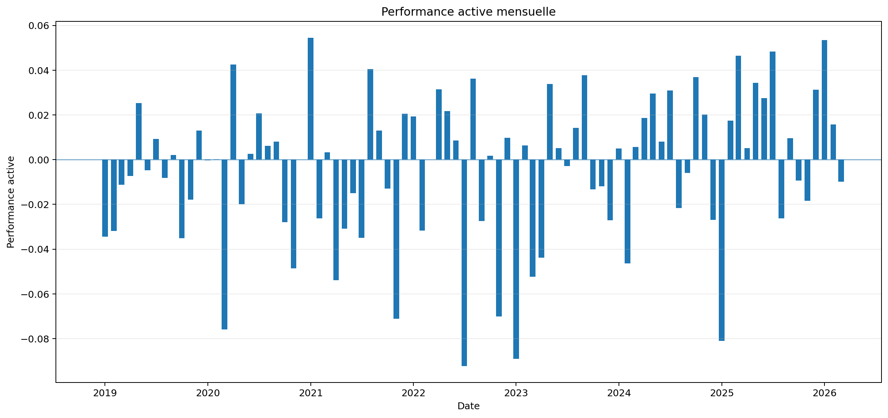
La performance active mensuelle donne une vue plus exploitable que le bruit quotidien pour juger de la régularité de l’alpha.
Heatmap des rendements mensuels
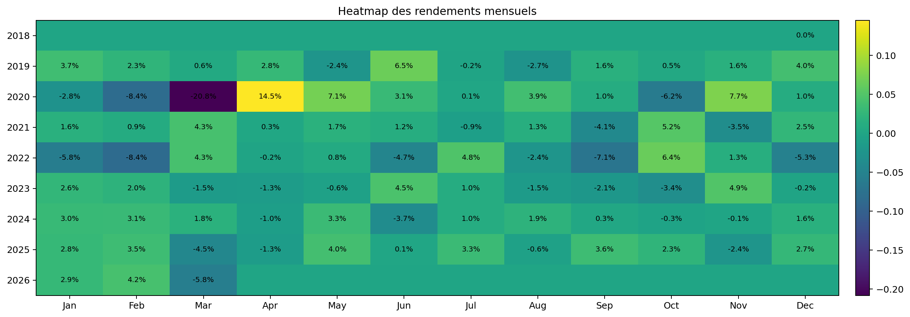
La heatmap mensuelle synthétise très rapidement la régularité de la performance, la fréquence des mois négatifs et la concentration des gains.
Valeur des poches
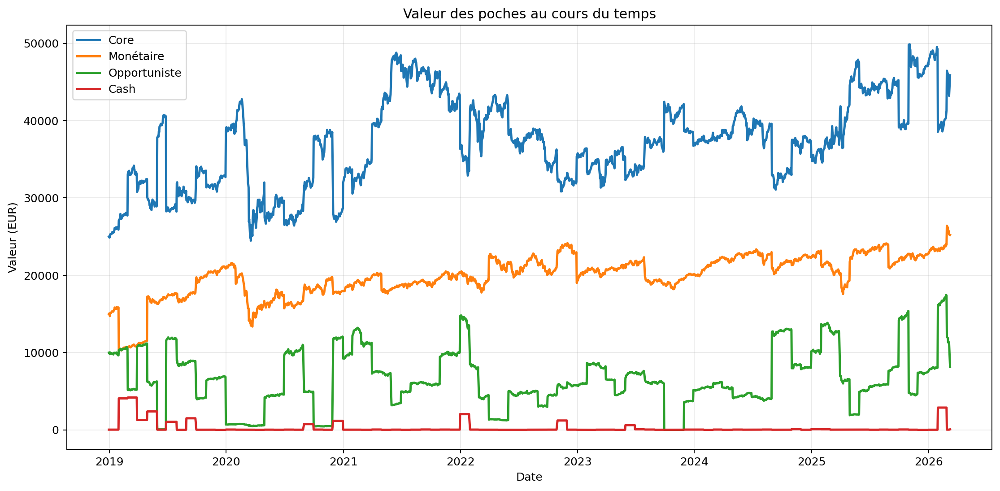
Cette figure décompose la contribution des différentes poches à la croissance de la valeur globale du portefeuille.
Poids des poches
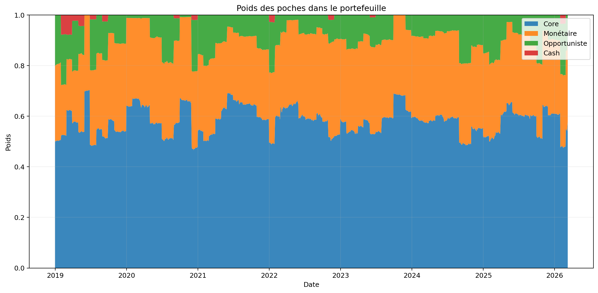
La vue empilée des poids permet de comprendre comment l’allocation entre les poches évolue au cours du backtest.
Nombre de positions
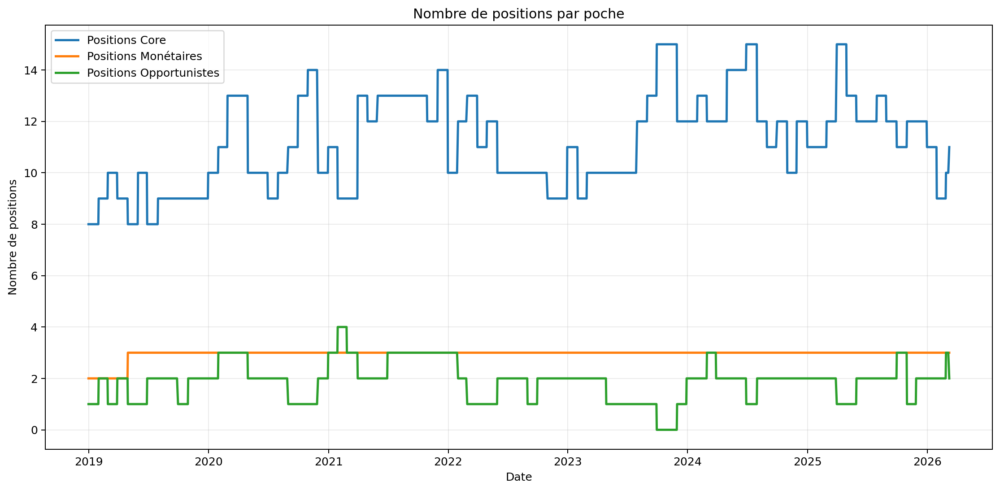
Le nombre de positions par poche permet d’analyser la concentration, la diversification effective et l’activité réelle de chaque sleeve.
Turnover et coûts
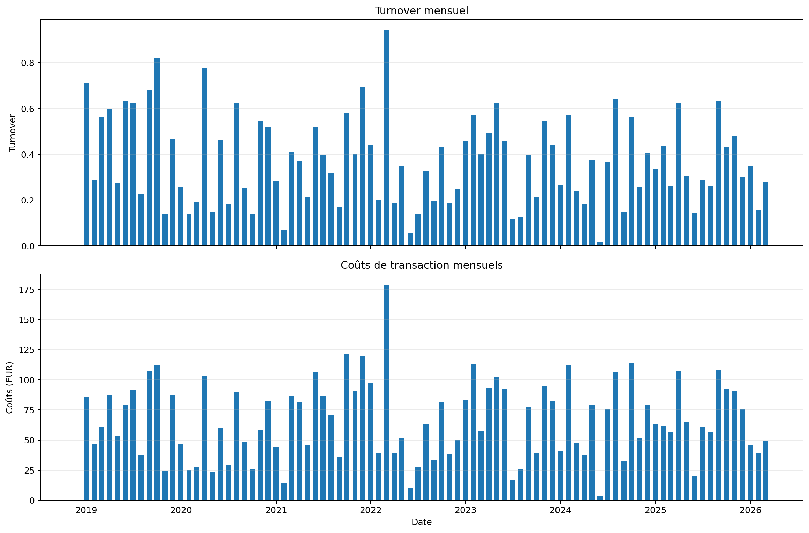
Le turnover mensuel et les coûts mensuels sont séparés pour rester lisibles. Cette figure aide à identifier les épisodes de sur-rotation et les périodes où l’exécution détruit du rendement.
Coûts cumulés
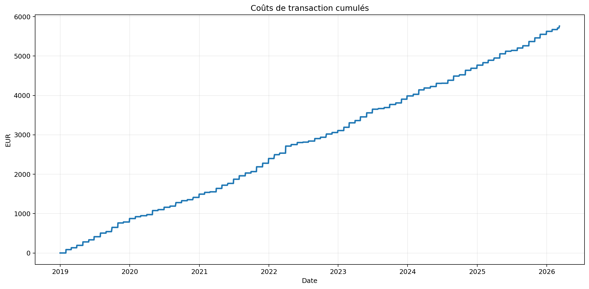
Les coûts cumulés mesurent la part de performance brute qui a été abandonnée en frais d’exécution au fil du temps.
Raisons des décisions
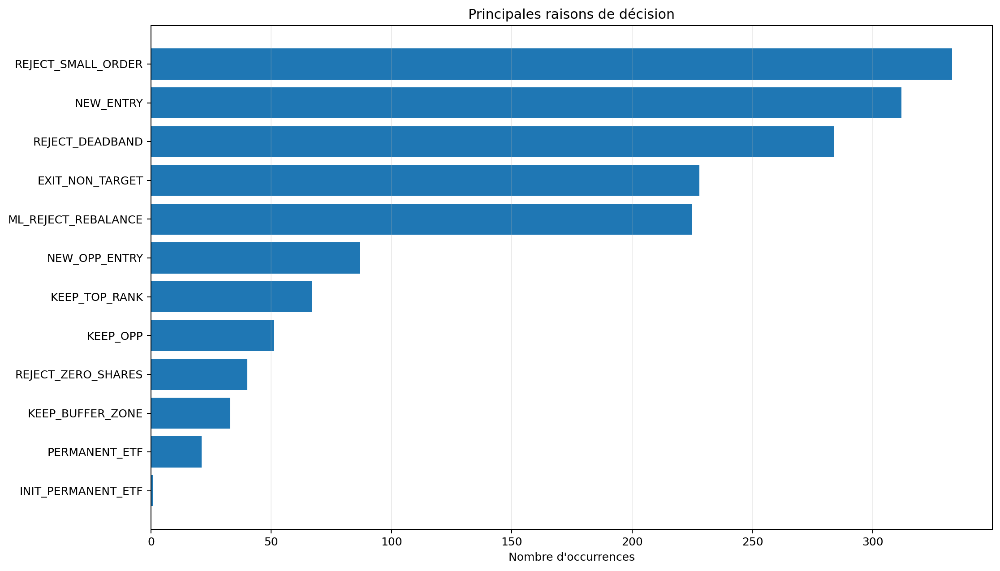
Le détail des raisons de décision est particulièrement utile pour diagnostiquer les freins du moteur : deadband, coûts, alpha hurdle ou sorties forcées.
Résumé global en français
Conclusion rédigée automatiquement à partir des résultats du backtest.